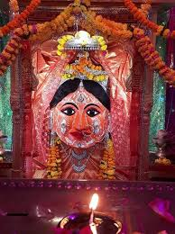

नगरकोट की रानी प्राचीन उज्जयिनी के दक्षिण-पश्चिम कोने की सुरक्षा देवी है। यह स्थान पुरातत्व की दृष्टि से महत्वपूर्ण है।
राजा विक्रमादित्य और राजा भर्तृहरि की अनेक कथाएं इस स्थान से संबद्ध हैं।
यह स्थान नाथ संप्रदाय की परंपरा से जुड़ा है। मंदिर के सामने एक कुंड है, जो परमारकालीन है।

कुंड के दोनों ओर दो छोटे मंदिर हैं। एक मंदिर में गुप्तकालीन कार्तिकेय की प्रतिमा है।
यह स्थान नगर के प्राचीन कच्चे परकोटे पर स्थित है इसलिए इसे नगरकोट की रानी कहा कहा जाता है।